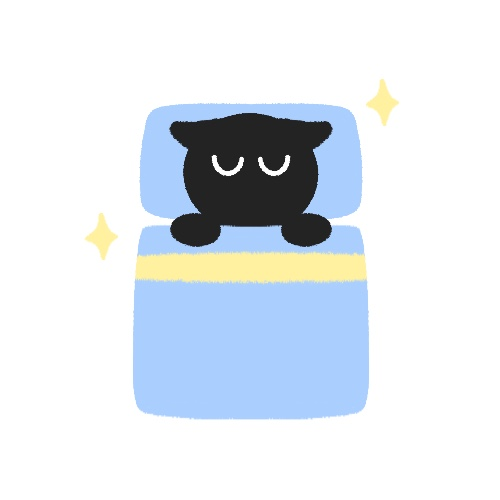

이젠 푹- 잠들자 !
잠 못 자는 당신을 위한 다양한 수면 Tip

잠들기 전
1. 긴장을 풀자
밤에 잠이 오지 않아 고생이라면 마음을 비우고 긴장을 풀면 잠 오는데 도움이 된다.
더보기
1) 심호흡을 다섯 번 한다.숨을 들이쉬었다 내쉬면 몸의 긴장이 풀린다.
손을 배에 대고 호흡할 때 배에 얹은 손이 오르락내리락하는 것을 따라서 숨을 쉬어본다.
2) 다리에 닿는 침대 시트의 느낌, 방안 온도, 시트나 침대의 냄새에 집중한다.
지금 이 순간에 고도로 집중하면 잠에 빠지는 데 도움이 된다.
3) 발가락을 긴장시키면 실제로 긴장이 많이 풀린다.
발가락을 안쪽으로 당기고, 10까지 세고, 이완시키고 다시 10까지 세는 것을 10번 반복한다.
2. 잠시 다른 일을 하자
한동안 잠을 자려고 해보았지만 잠이 오지 않는다면 방에서 나가 잠시 다른 일을 한다.
더보기
1) 거실이나 집안의 다른 곳으로 가서 졸리기 시작할 때만 침대로 되돌아 온다.2) 조명을 어둡게 하고 너무 자극적인 것은 하지 않는다.
3) 지루한 책 읽기, 조용한 음악 듣기, 등 긴장을 풀어주는 활동을 한다.
3. 할 일 리스트 작성을 하자
내일 할 일을 생각하느라 잠을 이룰 수 없다면 할 일 리스트를 만든다.
더보기
1) 종이에 내일 해야 할 일을 모두 적는다.2) 스마트폰을 사용하지 않는다.
3) 잡념을 떨쳐버린다.
4. 캐모마일 차나 따듯한 우유를 마시자
캐모마일 차나 따듯한 우유가 도움이 된다.
5. 뜨거운 물로 목욕이나 샤워를 하자
잠자리에 들기 직전에 체온이 자연스럽게 떨어지기 때문에 따뜻한 목욕 및 샤워는 도움이 된다.
더보기
1) 잠자리에 들기 2시간 전에 샤워를 하는 것이 가장 효과가 좋다.2) 따뜻한 물로 목욕 및 샤워를 한다.
5. 백색 소음을 듣자
바깥 소음이나 소란스러운 이웃 때문에 잠들기가 어렵다면 백색 소음을 듣는게 좋다.
더보기
1) 백색 소음 기계는 배경 소음을 발생시켜 원치않는 소리를 덮는다.2) 백색 소음 앱 및 영상을 통해 듣는다.
6. 약을 복용하자
수면에 도움이 되는 약을 복용하는 것도 도움이 된다. 약을 복용하기 전에 의사와 상의를 해야한다.
더보기
1)멜라토닌수면/기상 주기를 돕기 위해 신체에서 생성하는 호르몬
보충제를 복용한다.멜라토닌 보충제를 복용하면 졸음이 오고 단기적인 해결책이 될 수 있다.
"USP 인증"복용량과 성분이 포장에 정확히 기재
이라고 표시된 보충제를 구입한다.2)
마그네슘전체적인 수면의 질을 높이는 데 도움
을 복용한다.매일 300-400mg 또는 조금 더 복용한다. 하지만 매일 1,000mg을 초과하지 않는다.
환경
적정 온도
22-24도
적정 습도 45-55%
적정 시간 7-8시간
수면습관
1. 수면 스케줄을 지키자
더보기
1. 장기적으로 수면 습관을 개선하고 싶다면 확고한 수면 스케줄을 짠다.2. 신체는 생체 리듬에 따라 수면/기상 시간을 정한다.
3. 잠들려고 노력하고 매일 같은 시간에 일어나면 더 쉽게 잠들고 일어날 수 있다.
4. 원하는 시간에 잠을 자게 되기까지 매일 밤 20-30분씩 앞당겨서 잠자리에 든다
5. 주말에도 스케줄을 지긴다.
2. 밝은 빛을 피하라
더보기
노트북, 태블릿, 스마트폰 등 전자기기는 자극적이고 수면을 방해하는 "블루 라이트"를 방출한다.잠자리에 들기 전에 이런 기기를 사용하는 것을 지양하고 블루 라이트를 줄이는 방법을 찾아본다.
3. 자기 전 음식을 주의하라
더보기
잠자리에 들기 전에 잔뜩 음식을 먹으면 위에 부담이 되서 밤에 잠을 못 이룬다.잠자리에 들기 전에 배가 고프면 저칼로리이고 복합 탄수화물을 먹는다.
4. 침구를 바꿔라

더보기
1. 가급적이면 공기가 잘 통하고 통기성이 좋은 면 침구를 사용한다.2. 시트, 이불, 베개, 베갯잇의 라벨을 확인하여 자극을 주는 것을 피한다.
3. 베개는 시간이 지나면서 탄탄함을 잃기 때문에 탄력이 없다면 새것으로 교체한다.
생활습관
1. 운동을 해라
더보기
운동은 수면에 도움이 되고, 전반적인 건강 상태를 향상시키며, 스트레스 관리에 도움이 된다.1. 매일 10분만 유산소 운동을 하면 수면의 질이 높아진다.
2. 일주일에 몇 번 조깅, 자전거 타기 등 유산소 운동을 병행하면 더 빨리 잠들 수 있다.
3. 아침이나 늦은 오후에 운동을 한다.
2. 니코틴, 알코올, 카페인을 줄여라
더보기
니코틴과 카페인은 체내에 장시간 머무르는 자극제이다.밤늦게 담배를 피우거나 커피를 마시면 잠들기 어렵다.
1. 이른 오후가 지나서 커피를 마시는 것을 피한다.
2. 흡연자는 담배를 끊는다.
3. 알코올은 졸리게 만들지만 수면의 질이 떨어지므로 밤에 술을 한두 잔 이상 마시지 않는다.
3. 스트레스를 관리해라
더보기
삶에서 스트레스를 많이 받으면 밤에 깨어있게 된다.수면의 질을 높이고 싶다면 전반적으로 스트레스 수준을 낮추어야 한다.
1. 정리정돈을 하여 주변을 더 깨끗이 치우는 것 같은 작은 변화가 스트레스에 큰 영향을 미친다.
2. 하루 종일 너무 열심히 일하도록 자신을 몰아붙이지 않고 10-15분 휴식을 취한다.
3. 요가, 명상, 심호흡 등 스트레스를 줄이는 활동을 한다.
음식
체리 - 수면을 유도하는 멜라토닌 성분이 함유
키위 - 세로토닌 수치를 높이는 작용

바나나 - 숙면에 도움이 되는 트립토판 성분 함유
우유 - 숙면에 도움이 되는 트립토판 성분 함유
아몬드 - 근육의 긴장을 푸는데 도움이 되는 마그네슘을 함유
상추 - 수면, 진정효과가 있는 락투카리움 성분 함유